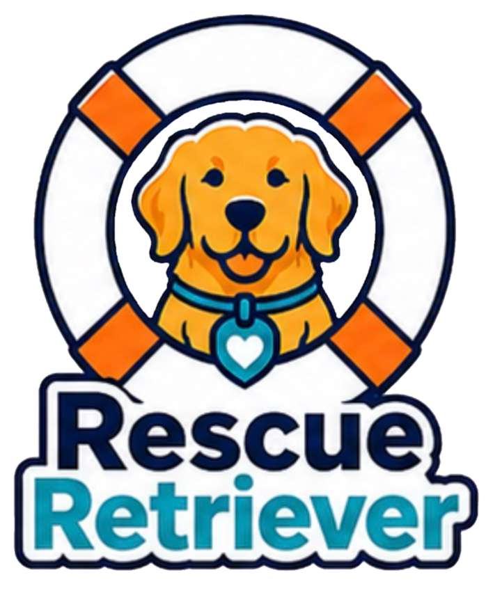

This trail ends here
We couldn't find that page.
The link may have changed, or the page may no longer exist. You can head back to Rescue Retriever and keep exploring shelter-dog candidates.

Rescue RetrieverThis trail ends here
The link may have changed, or the page may no longer exist. You can head back to Rescue Retriever and keep exploring shelter-dog candidates.